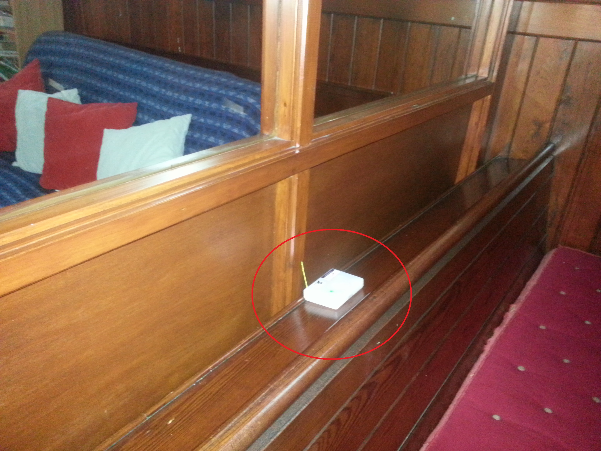

Where to put the sensor unit
Where to put the sensor unit#
When you decide where to put the thermal monitor’s sensor unit, it should be:
somewhere representative of what people will feel
not in a corner or anywhere else with poor airflow
not in direct sun or influenced by a heating source like a radiator
not very close to a very cold wall (for instance, external stone walls)
not close enough to an actual person to be influenced by their body heat
not where it will be hit by footballs, thrown around by children, and so on.
These are the same rules as for thermostats, and sometimes next to the thermostat is a good choice, although some of them can be very badly sited!
Blutak can mark many surfaces and tape can leave permanent marks on stonework. In some spaces you may need to be inventive - tying string around the sensor as if it were a present and then using another piece of string to hang it from a pillar, for instance. If you do hang it somewhere, be careful that it cannot injure anyone if it falls.
Tip
It can be hard to remember where you put the sensor unit - one easy way is to take a picture on your phone that shows the surrounding context. Then if you forget, you’ll know exactly where to look.
{kind=link}
If you have an internet-connected monitor, the hub just needs to be plugged in somewhere close enough to the sensor unit that the radio can reach it. If you are struggling with this, try pointing them in the same direction using the arrows on the box.
If you have more than one space you want to monitor, you can move your sensor unit around. Collect at least two weeks of representative data from each. It’s helpful to do this in all four seasons, but you won’t be able to do that during the course of the supported programme. For the programme itself, you want to get really good data when it’s properly code out for the space you will discuss during session 3. For your own purposes, if you move the sensor unit, you’ll want to record where it was when. You can do this using our template. Don’t forget that when you move the sensor unit, if you have an internet-connected monitor you may also need to move the hub.